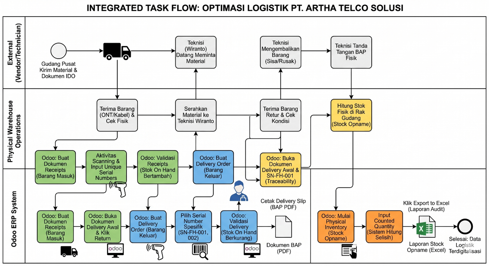
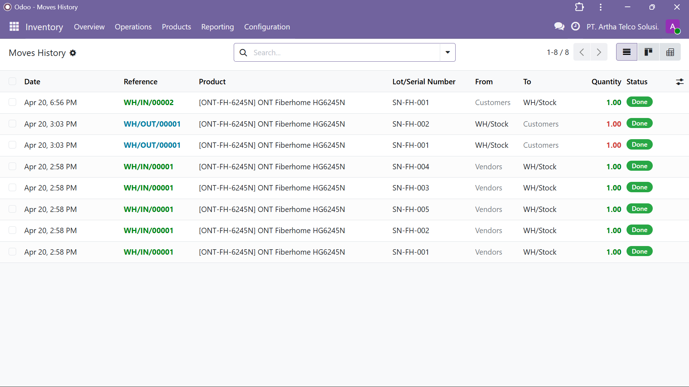
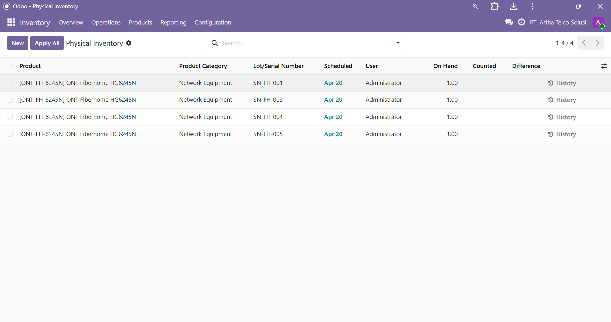

02 / Featured Case Study
Digital transformation for PT. Artha Telco Solusi (Simulated). Implementing Odoo ERP to streamline regional warehouse (STO) logistics, ensuring real-time asset accuracy and operational efficiency.

Through an As-Is business process observation, several critical bottlenecks were identified in the existing logistics management:
I utilized the Systems Development Life Cycle (SDLC) framework to ensure the engineered solution precisely answered the business needs:
Solving traceability and reporting issues through targeted module implementation.

Activated the Unique Serial Number feature to guarantee 100% accuracy in tracking device history—from vendor inbound, distribution, to reverse logistics.

Configured the Inventory Adjustment module to eliminate manual recording, featuring instant dynamic exports to Excel formats for immediate audit readiness.
The strategic impact of the ERP implementation on PT. Artha Telco Solusi's regional operations.
Guaranteed stock accuracy bridging physical and system data via unique serial number tracking.
Increase in operational speed compared to legacy manual processes and data entry.
Created standardized operational workflows ready to be replicated across future STO branches.